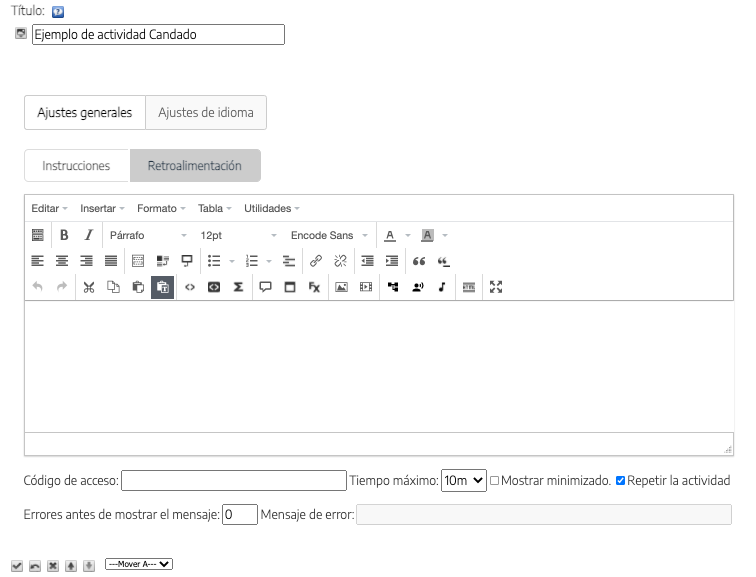

Este iDevice permite crear actividades en la que la retroalimentación está protegida por contraseña.
Al seleccionar el iDevice "Candado" del listado de iDevices se nos mostrará lo siguiente en nuestro eXeLearning:

En la parte superior, tendremos la posibilidad de modificar el título del iDevice y asignar un icono.
Vemos que existen una serie de pestañas, cada una con una funcionalidad diferente (aparecen solo en Modo avanzado).
Ajustes Generales
La pestaña "Ajustes Generales" es la que se muestra por defecto al crear el iDevice Candado.
En esta pestaña ofreceremos las Instrucciones de la actividad, así como la Retroalimentación que se ofrecerá una vez indicado el código de acceso correcto.
Se definirá dicho código de acceso así como el tiempo disponible para introducirlo y se podrá configurar la posibilidad de repetir la actividad y el número de errores que se van a permitir antes de mostrar el mensaje de error.
Ajustes de idioma
Pestaña en donde podremos personalizar los textos y mensajes automáticos que genera el iDevice.